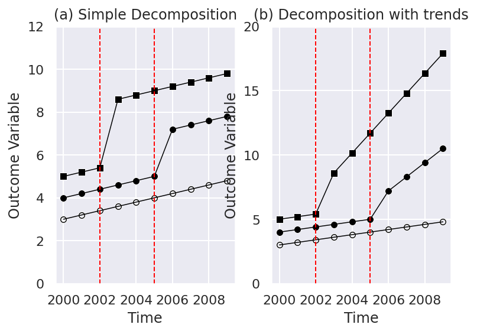
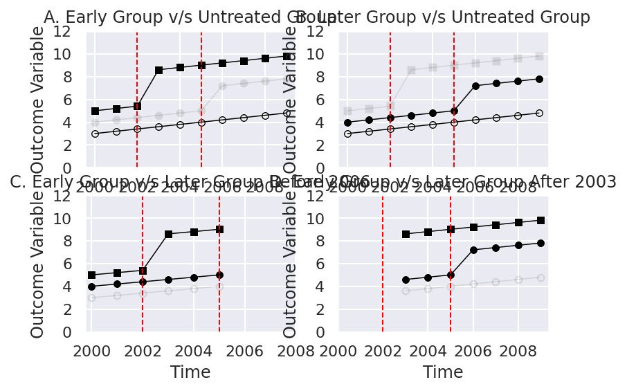
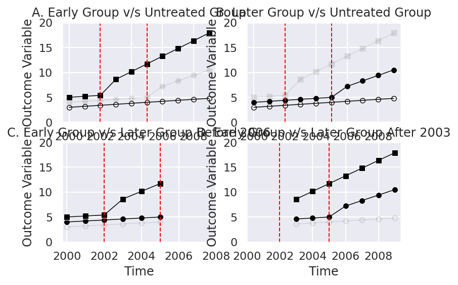
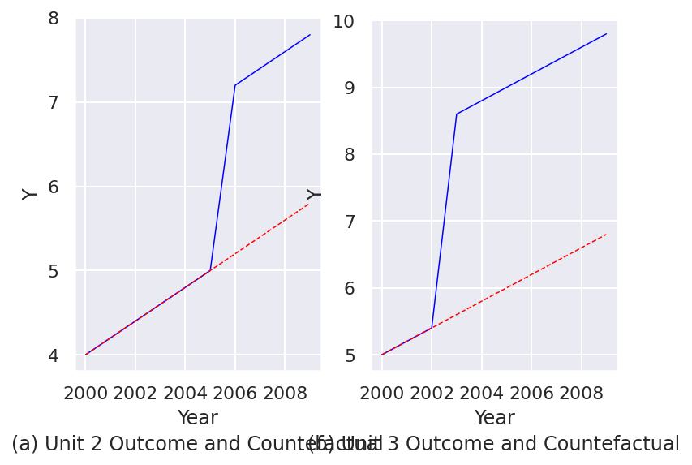

import pandas as pd
import numpy as np
Data = pd.DataFrame({'unit': np.ceil(np.arange(1,31)/10),
'year': np.tile(np.arange(2000, 2010), 3)})
Data.head()| unit | year | |
|---|---|---|
| 0 | 1.0 | 2000 |
| 1 | 1.0 | 2001 |
| 2 | 1.0 | 2002 |
| 3 | 1.0 | 2003 |
| 4 | 1.0 | 2004 |
Two-Way Fixed Effects Estimators and Heterogeneous Treatment Effects To understand the potential issues related to heterogeneous treatment effects over time and two-way fixed effect estimators, we will examine a pair of numerical examples. In particular, we will focus on the composition of the two way FE estimator \(\tau\) estimated from: \[ y_{st} = \gamma_s + \lambda_t + \tau w_{st} + \varepsilon_{st} \tag{15.1}\] where \(y_{st}\) is the outcome variable, \(\gamma_s\) and \(\lambda_t\) are state (unit) and time fixed effects, \(w_{st}\) is the binary treatment variable that takes the value of 1 if a state (unit) \(s\) is treated at time \(t\) and otherwise takes 0. We will work with a quite tractable example based on three units and 10 time periods, and will document how the approaches taken by Goodman-Bacon (2021) and by Chaisemartin and D’Haultfoeuille (2020) to understand the two-way FE estimator compare.
The results from Goodman-Bacon (2021) and those from Chaisemartin and D’Haultfoeuille (2020) are similar, however they take quite different paths to get there. Goodman-Bacon’s (like that laid out in Athey and Imbens (2022)) is “mechanical” in that it is based on the underlying difference-in-differences comparisons between all groups. The result in Chaisemartin and D’Haultfoeuille (2020) is based on a potential outcomes frame-work, and counterfactuals under parallel trend assumptions. Thus to examine how these methods work requires somewhat different frameworks. In the case of Goodman-Bacon (2021), we should consider all possible DD comparisons, while in the case of Chaisemartin and D’Haultfoeuille (2020) we should consider the treatment effect for each unit and time period, which requires knowing the observed and counterfactual state. While the approaches the two papers take to understand the content of the estimator differ, they refer to the same estimator, so always recover the same parameter estimate. To examine this in a more applied way, we will look at a simulated example.
To do this, let’s consider a panel of 3 states/areas over the 10 years (\(t\)) of 2000 to 2009. One of these units is entirely untreated (\(unit = 1\) or group \(U\)), one is treated at an early time period, 2003, (\(unit = 2\) or group \(k\)), and the other is treated at a later time period, 2006, (\(unit = 3\) or group \(l\)). We will construct a general structure for this data below:
import pandas as pd
import numpy as np
Data = pd.DataFrame({'unit': np.ceil(np.arange(1,31)/10),
'year': np.tile(np.arange(2000, 2010), 3)})
Data.head()| unit | year | |
|---|---|---|
| 0 | 1.0 | 2000 |
| 1 | 1.0 | 2001 |
| 2 | 1.0 | 2002 |
| 3 | 1.0 | 2003 |
| 4 | 1.0 | 2004 |
We will consider a simple-case where the actual data-generating process is known as: \[y_{unit,t} = 2 + 0.2 \times (t - 2000) + 1 \times unit + \beta_1 \times post \times unit + \beta_2 \times post \times unit \times (t - treat).\] Here \(unit\) refers to the unit number listed above (1, 2 or 3), \(post\) indicates that a unit is receiving treatment in the relevant time period \(t\), and \(treat\) refers to the treatment period (2003 for unit 2, and 2006 for unit 3). Let’s generate treatment, time to treatment, and post-treatment variables in R:
Data['treat'] = np.where(Data['unit'] == 2, 2006,
np.where(Data['unit'] == 3, 2003, 0))
Data['time'] = np.where(Data['treat'] == 0, 0, Data['year'] - Data['treat'])
Data['post'] = np.where(((Data['time'] >= 0) & (Data['treat'] != 0)), 1, 0) This specification allows for each unit to have its own fixed effect, given that \(unit\) is multiplied by 1, and allows for a general time trend increasing by 0.2 units each period across the whole sample. These parameters are not so important, as what we care about are the treatment effects themselves. The impact of treatment comes from the units \(\beta_1\) and \(\beta_2\). The first of these, \(\beta_1\), captures an immediate unit-specific jump when treatment is implemented which remains stable over time. The second of these, \(\beta_2\), implies a trend break occurring only for the treated units once treatment comes into place. We will consider 2 cases below. In the first case \(\beta_1 = 1\) and \(\beta_2 = 0\) (a simple case with a constant treatment effect per unit):
Data['y1'] = 2 + (Data['year'] - 2000) * 0.2 + 1 * Data['unit'] + 1 * Data['post'] * Data['unit'] + 0 * Data['post'] * Data['unit'] * (Data['time'])and in a second case \(\beta_1 = 1\) and \(\beta_2 = 0.45\). This is a more complex case in which there are heterogeneous treatment effects over time:
Data['y2'] = 2 + (Data['year'] - 2000) * 0.2 + 1 * Data['unit'] + 1 * Data['post'] * Data['unit'] + 0.45 * Data['post'] * Data['unit'] * (Data['time'])These two cases are plotted next where the line with empty circles refers to group \(U\), the line with black filled circles refers to group \(k\) and the line with squares refers to group \(l\)
import seaborn as sns
import matplotlib.pyplot as plt
sns.set_theme()
[Fig1, ax] = plt.subplots(1,2)
PanelA = sns.lineplot(data=Data[Data['unit'] == 1], x ='year', y='y1',
color='black', size=1, ax = ax[0])
PanelA = sns.scatterplot(data=Data[Data['unit'] == 1], x ='year', y='y1',
color='black', marker="$\circ$", ax = ax[0])
PanelA = sns.lineplot(data=Data[Data['unit'] == 2], x ='year', y='y1',
color='black', size=1, ax = ax[0])
PanelA = sns.scatterplot(data=Data[Data['unit'] == 2], x ='year', y='y1',
color='black', ax = ax[0])
PanelA = sns.lineplot(data=Data[Data['unit'] == 3], x ='year', y='y1',
color='black', size=1, ax = ax[0])
PanelA = sns.scatterplot(data=Data[Data['unit'] == 3], x ='year', y='y1',
color='black', marker='s', ax = ax[0])
PanelA.axvline(2002, color = 'red', linestyle='dashed', linewidth=1)
PanelA.axvline(2005, color = 'red', linestyle='dashed', linewidth=1)
PanelA.set_yticks([0, 2, 4, 6, 8, 10, 12])
PanelA.set_xticks([2000, 2002, 2004, 2006, 2008])
PanelA.legend([],[], frameon=False)
PanelA.set_ylabel('Outcome Variable')
PanelA.set_xlabel('Time')
PanelA.set_title('(a) Simple Decomposition')
PanelB = sns.lineplot(data=Data[Data['unit'] == 1], x ='year', y='y2',
color='black', size=1, ax = ax[1])
PanelB = sns.scatterplot(data=Data[Data['unit'] == 1], x ='year', y='y2',
color='black', marker="$\circ$", ax = ax[1])
PanelB = sns.lineplot(data=Data[Data['unit'] == 2], x ='year', y='y2',
color='black', size=1, ax = ax[1])
PanelB = sns.scatterplot(data=Data[Data['unit'] == 2], x ='year', y='y2',
color='black', ax = ax[1])
PanelB = sns.lineplot(data=Data[Data['unit'] == 3], x ='year', y='y2',
color='black', size=1, ax = ax[1])
PanelB = sns.scatterplot(data=Data[Data['unit'] == 3], x ='year', y='y2',
color='black', marker='s', ax = ax[1])
PanelB.axvline(2002, color = 'red', linestyle='dashed', linewidth=1)
PanelB.axvline(2005, color = 'red', linestyle='dashed', linewidth=1)
PanelB.set_yticks([0, 5, 10, 15, 20])
PanelB.set_xticks([2000, 2002, 2004, 2006, 2008])
PanelB.legend([],[], frameon=False)
PanelB.set_ylabel('Outcome Variable')
PanelB.set_xlabel('Time')
PanelB.set_title('(b) Decomposition with trends')/usr/lib/python3/dist-packages/scipy/__init__.py:146: UserWarning:
A NumPy version >=1.17.3 and <1.25.0 is required for this version of SciPy (detected version 1.26.4
Text(0.5, 1.0, '(b) Decomposition with trends')
First we will estimate the parameter by two-way fixed effects regression. This will provide us with the parameter estimate that both Goodman-Bacon (2021) and Chaisemartin and D’Haultfoeuille (2020) will construct in a piece-wise fashion. This is done relatively simply in R. We simply estimate Equation eq-twfe by linear regression using lm as laid out below:
import statsmodels.api as sm
case1 = sm.OLS.from_formula('y1 ~ post + C(unit) + C(year)', data=Data).fit()
print("The parameter estimates by two-way fixed effects regression for the case 1 is: ", case1.params["post"])
case2 = sm.OLS.from_formula('y2 ~ post + C(unit) + C(year)', data=Data).fit()
print("The parameter estimates by two-way fixed effects regression for the case 2 is: ", case2.params["post"])The parameter estimates by two-way fixed effects regression for the case 1 is: 2.454545454545456
The parameter estimates by two-way fixed effects regression for the case 2 is: 3.8045454545454556Here we see that the coefficient of interest is 2.454545. We can see that this is between the two unit-specific jumps that occur with treatment (2 and 3). We will see below why it takes this particular weighted average.
Using the values simulated above, let’s see how the Goodman-Bacon (2021) decomposition allows us to understand estimated treatment effects. We will consider both:
- (a) Simple Decomposition
- (b) Decomposition with trends
The methodology Goodman-Bacon (2021) decomposition suggests that we should calculate all \(2 \times 2\) combinations of states and time where post-treatment units are compared to “untreated” unit (laid out at more length in the boo). In this example, this provides four specific effects, which contribute to \(\widehat{\tau}\) as a weighted mean. The specific effects desired are:
These will then be weighted as laid out in Goodman-Bacon (2021) to provide the regression-based estimate.
In this case the Goodman-Bacon (2021) methodology estimate \(\widehat{\tau}\) weighting the next four DD comparisons
[Fig2, ax] = plt.subplots(2,2)
### PanelA
PanelA = sns.lineplot(data=Data[Data['unit'] == 1], x ='year', y='y1',
color='black', size=1, ax = ax[0,0])
PanelA = sns.scatterplot(data=Data[Data['unit'] == 1], x ='year', y='y1',
color='black', marker="$\circ$", ax = ax[0,0])
PanelA = sns.lineplot(data=Data[Data['unit'] == 2], x ='year', y='y1',
color='black', size=1, ax = ax[0,0], alpha = 0.1)
PanelA = sns.scatterplot(data=Data[Data['unit'] == 2], x ='year', y='y1',
color='black', ax = ax[0,0], alpha = 0.1)
PanelA = sns.lineplot(data=Data[Data['unit'] == 3], x ='year', y='y1',
color='black', size=1, ax = ax[0,0])
PanelA = sns.scatterplot(data=Data[Data['unit'] == 3], x ='year', y='y1',
color='black', marker='s', ax = ax[0,0])
PanelA.axvline(2002, color = 'red', linestyle='dashed', linewidth=1)
PanelA.axvline(2005, color = 'red', linestyle='dashed', linewidth=1)
PanelA.set_yticks([0, 2, 4, 6, 8, 10, 12])
PanelA.set_xticks([2000, 2002, 2004, 2006, 2008])
PanelA.legend([],[], frameon=False)
PanelA.set_ylabel('Outcome Variable')
PanelA.set_xlabel('Time')
PanelA.set_title('A. Early Group v/s Untreated Group')
### PanelB
PanelB = sns.lineplot(data=Data[Data['unit'] == 1], x ='year', y='y1',
color='black', size=1, ax = ax[0,1])
PanelB = sns.scatterplot(data=Data[Data['unit'] == 1], x ='year', y='y1',
color='black', marker="$\circ$", ax = ax[0,1])
PanelB = sns.lineplot(data=Data[Data['unit'] == 2], x ='year', y='y1',
color='black', size=1, ax = ax[0,1])
PanelB = sns.scatterplot(data=Data[Data['unit'] == 2], x ='year', y='y1',
color='black', ax = ax[0,1])
PanelB = sns.lineplot(data=Data[Data['unit'] == 3], x ='year', y='y1',
color='black', size=1, ax = ax[0,1], alpha = 0.1)
PanelB = sns.scatterplot(data=Data[Data['unit'] == 3], x ='year', y='y1',
color='black', marker='s', ax = ax[0,1], alpha = 0.1)
PanelB.axvline(2002, color = 'red', linestyle='dashed', linewidth=1)
PanelB.axvline(2005, color = 'red', linestyle='dashed', linewidth=1)
PanelB.set_yticks([0, 2, 4, 6, 8, 10, 12])
PanelB.set_xticks([2000, 2002, 2004, 2006, 2008])
PanelB.legend([],[], frameon=False)
PanelB.set_ylabel('Outcome Variable')
PanelB.set_xlabel('Time')
PanelB.set_title('B. Later Group v/s Untreated Group')
### PanelC
PanelC = sns.lineplot(data=Data[(Data['unit'] == 1) & (Data['year'] < 2006)],
x ='year', y='y1', color='black', size=1, ax = ax[1,0],
alpha = 0.1)
PanelC = sns.scatterplot(data=Data[(Data['unit'] == 1) & (Data['year'] < 2006)],
x ='year', y='y1', color='black', marker="$\circ$",
ax = ax[1,0], alpha = 0.1)
PanelC = sns.lineplot(data=Data[(Data['unit'] == 2) & (Data['year'] < 2006)],
x ='year', y='y1', color='black', size=1, ax = ax[1,0])
PanelC = sns.scatterplot(data=Data[(Data['unit'] == 2) & (Data['year'] < 2006)],
x ='year', y='y1', color='black', ax = ax[1,0])
PanelC = sns.lineplot(data=Data[(Data['unit'] == 3) & (Data['year'] < 2006)],
x ='year', y='y1', color='black', size=1, ax = ax[1,0])
PanelC = sns.scatterplot(data=Data[(Data['unit'] == 3) & (Data['year'] < 2006)],
x ='year', y='y1', color='black', marker='s',
ax = ax[1,0])
PanelC.axvline(2002, color = 'red', linestyle='dashed', linewidth=1)
PanelC.axvline(2005, color = 'red', linestyle='dashed', linewidth=1)
PanelC.set_yticks([0, 2, 4, 6, 8, 10, 12])
PanelC.set_xticks([2000, 2002, 2004, 2006, 2008])
PanelC.legend([],[], frameon=False)
PanelC.set_ylabel('Outcome Variable')
PanelC.set_xlabel('Time')
PanelC.set_title('C. Early Group v/s Later Group Before 2006')
### PanelD
PanelD = sns.lineplot(data=Data[(Data['unit'] == 1) & (Data['year'] > 2002)],
x ='year', y='y1', color='black', size=1, ax = ax[1,1],
alpha = 0.1)
PanelD = sns.scatterplot(data=Data[(Data['unit'] == 1) & (Data['year'] > 2002)],
x ='year', y='y1', color='black', marker="$\circ$",
ax = ax[1,1], alpha = 0.1)
PanelD = sns.lineplot(data=Data[(Data['unit'] == 2) & (Data['year'] > 2002)],
x ='year', y='y1', color='black', size=1, ax = ax[1,1])
PanelD = sns.scatterplot(data=Data[(Data['unit'] == 2) & (Data['year'] > 2002)],
x ='year', y='y1', color='black', ax = ax[1,1])
PanelD = sns.lineplot(data=Data[(Data['unit'] == 3) & (Data['year'] > 2002)],
x ='year', y='y1', color='black', size=1, ax = ax[1,1])
PanelD = sns.scatterplot(data=Data[(Data['unit'] == 3) & (Data['year'] > 2002)],
x ='year', y='y1', color='black', marker='s',
ax = ax[1,1])
PanelD.axvline(2002, color = 'red', linestyle='dashed', linewidth=1)
PanelD.axvline(2005, color = 'red', linestyle='dashed', linewidth=1)
PanelD.set_yticks([0, 2, 4, 6, 8, 10, 12])
PanelD.set_xticks([2000, 2002, 2004, 2006, 2008])
PanelD.legend([],[], frameon=False)
PanelD.set_ylabel('Outcome Variable')
PanelD.set_xlabel('Time')
PanelD.set_title('D. Early Group v/s Later Group After 2003')Text(0.5, 1.0, 'D. Early Group v/s Later Group After 2003')
As seen in the plots, in the simple decomposition these effects are constants of 3 and 2 for early and later treated units given that the “treatment effect” is simply \(1 \times unit\) in each case.
In order to calculate the effects we start making the simple DD comparison of the untreated group \(U\) (\(unit = 1\)) with the early treated group \(k\) (\(unit = 3\)) getting \(\widehat{\beta}^{2 \times 2}_{kU}\) as \[\widehat{\beta}^{2 \times 2}_{kU} = \left( \overline{y}_k^{Post(k)} - \overline{y}_k^{Pre(k)} \right) - \left( \overline{y}_U^{Post(k)} - \overline{y}_U^{Pre(k)} \right)\] Where \(\overline{y}_k^{Post(k)}\) is the mean of the outcome variable for the early treated group \(k\) (\(unit = 3\)) posterior to treatment, from 2003, \(\overline{y}_k^{Pre(k)}\) is the mean for of the outcome variable for the early treated group \(U\) (\(unit = 3\)) prior to treatment, (up until 2002), and \(\overline{y}_U^{Post(k)}, \overline{y}_U^{Post(k)}\) are the analogous quantities for the untreated group \(U\) (\(unit = 1\))
((Data[(Data['unit'] == 3) & (Data['post'] == 1)]['y1'].mean() -
Data[(Data['unit'] == 3) & (Data['post'] == 0)]['y1'].mean()) -
(Data[(Data['unit'] == 1) & (Data['year'] >= 2003)]['y1'].mean() -
Data[(Data['unit'] == 1) & (Data['year'] < 2003)]['y1'].mean()))2.9999999999999987This result also can be obtained from the linear regression with the canonical DD formula \[y_{unit,t} = \alpha_0 + \alpha_1 \times Post(k) + \alpha_2 \times \mathbf{1}(unit = 3) + \beta_{kU}^{2\times2} \times Post(k) \times \mathbf{1}(unit = 3) + \varepsilon_i\] Where \(Post(k)\) indicates that the year is equal or greater than the year where the group \(k\) (\(unit = 3\)) received the treatment (2003) and \(\mathbf{1}(unit = 3)\) indicates if the observation is from the early treated group \(k\) (\(unit = 3\))
Data['post2003'] = np.where(Data['year'] >= 2003, 1, 0)
sm.OLS.from_formula('y1 ~ C(post2003) + C(unit) + C(post2003):C(unit)',
data=Data[Data['unit'] != 2]).fit().summary()| Dep. Variable: | y1 | R-squared: | 0.980 |
| Model: | OLS | Adj. R-squared: | 0.977 |
| Method: | Least Squares | F-statistic: | 266.1 |
| Date: | Sat, 25 May 2024 | Prob (F-statistic): | 7.35e-14 |
| Time: | 23:19:30 | Log-Likelihood: | -7.1761 |
| No. Observations: | 20 | AIC: | 22.35 |
| Df Residuals: | 16 | BIC: | 26.34 |
| Df Model: | 3 | ||
| Covariance Type: | nonrobust |
| coef | std err | t | P>|t| | [0.025 | 0.975] | |
| Intercept | 3.2000 | 0.224 | 14.311 | 0.000 | 2.726 | 3.674 |
| C(post2003)[T.1] | 1.0000 | 0.267 | 3.742 | 0.002 | 0.433 | 1.567 |
| C(unit)[T.3.0] | 2.0000 | 0.316 | 6.325 | 0.000 | 1.330 | 2.670 |
| C(post2003)[T.1]:C(unit)[T.3.0] | 3.0000 | 0.378 | 7.937 | 0.000 | 2.199 | 3.801 |
| Omnibus: | 0.432 | Durbin-Watson: | 1.067 |
| Prob(Omnibus): | 0.806 | Jarque-Bera (JB): | 0.533 |
| Skew: | -0.000 | Prob(JB): | 0.766 |
| Kurtosis: | 2.200 | Cond. No. | 8.95 |
A third way to obtain this is from the next linear regression \[y_{unit,t} = \alpha_0 + \beta_{kU}^{2 \times 2} \times Post + \sum_{i = 2001}^{2009} \alpha_{i-2000} \times \mathbf{1}(year = i) + \alpha_{10} \times \mathbf{1}(unit = 3) + \varepsilon_i\] Where in this case \(Post\) indicates if the unit is treated (note for group \(U\) this will be always 0), \(\mathbf{1}(year = i)\) indicates if the observation is in period \(i \in \{2001, \ldots, 2009\}\) and \(\mathbf{1}(unit = 3)\) keep its meaning
sm.OLS.from_formula('y1 ~ post + C(year) + C(unit)',
data=Data[Data['unit'] != 2]).fit().summary()| Dep. Variable: | y1 | R-squared: | 1.000 |
| Model: | OLS | Adj. R-squared: | 1.000 |
| Method: | Least Squares | F-statistic: | 5.610e+29 |
| Date: | Sat, 25 May 2024 | Prob (F-statistic): | 2.68e-118 |
| Time: | 23:19:30 | Log-Likelihood: | 641.71 |
| No. Observations: | 20 | AIC: | -1259. |
| Df Residuals: | 8 | BIC: | -1247. |
| Df Model: | 11 | ||
| Covariance Type: | nonrobust |
| coef | std err | t | P>|t| | [0.025 | 0.975] | |
| Intercept | 3.0000 | 3.63e-15 | 8.26e+14 | 0.000 | 3.000 | 3.000 |
| C(year)[T.2001] | 0.2000 | 4.45e-15 | 4.5e+13 | 0.000 | 0.200 | 0.200 |
| C(year)[T.2002] | 0.4000 | 4.45e-15 | 8.99e+13 | 0.000 | 0.400 | 0.400 |
| C(year)[T.2003] | 0.6000 | 4.95e-15 | 1.21e+14 | 0.000 | 0.600 | 0.600 |
| C(year)[T.2004] | 0.8000 | 4.95e-15 | 1.62e+14 | 0.000 | 0.800 | 0.800 |
| C(year)[T.2005] | 1.0000 | 4.95e-15 | 2.02e+14 | 0.000 | 1.000 | 1.000 |
| C(year)[T.2006] | 1.2000 | 4.95e-15 | 2.42e+14 | 0.000 | 1.200 | 1.200 |
| C(year)[T.2007] | 1.4000 | 4.95e-15 | 2.83e+14 | 0.000 | 1.400 | 1.400 |
| C(year)[T.2008] | 1.6000 | 4.95e-15 | 3.23e+14 | 0.000 | 1.600 | 1.600 |
| C(year)[T.2009] | 1.8000 | 4.95e-15 | 3.64e+14 | 0.000 | 1.800 | 1.800 |
| C(unit)[T.3.0] | 2.0000 | 3.63e-15 | 5.51e+14 | 0.000 | 2.000 | 2.000 |
| post | 3.0000 | 4.34e-15 | 6.91e+14 | 0.000 | 3.000 | 3.000 |
| Omnibus: | 5.930 | Durbin-Watson: | 0.512 |
| Prob(Omnibus): | 0.052 | Jarque-Bera (JB): | 3.532 |
| Skew: | 0.914 | Prob(JB): | 0.171 |
| Kurtosis: | 3.945 | Cond. No. | 15.3 |
Now we store this result for posterior use
bku = sm.OLS.from_formula('y1 ~ post + C(year) + C(unit)',
data=Data[Data['unit'] != 2]).fit().params['post']The next DD comparison we calculate is that which compares the later treated group \(l\) (\(unit = 2\)) with the untreated group \(U\) (\(unit = 1\)), resulting in \(\widehat{\beta}^{2 \times 2}_{lU}\). As above, we can generate this DD estimate in a number of ways (most simply by double-differencing with means), and this will then be stored.
blu = sm.OLS.from_formula('y1 ~ post + C(year) + C(unit)',
data=Data[Data['unit'] != 3]).fit().params['post']
print(blu)
print((Data[(Data['unit'] == 2) & (Data['post'] == 1)]['y1'].mean() -
Data[(Data['unit'] == 2) & (Data['post'] == 0)]['y1'].mean()) -
(Data[(Data['unit'] == 1) & (Data['year'] >= 2006)]['y1'].mean() -
Data[(Data['unit'] == 1) & (Data['year'] < 2006)]['y1'].mean()))
Data['post2006'] = np.where(Data['year'] >= 2006, 1, 0)
sm.OLS.from_formula('y1 ~ C(post2006) + C(unit) + C(post2006):C(unit)',
data=Data[Data['unit'] != 3]).fit().summary()2.0
2.000000000000001| Dep. Variable: | y1 | R-squared: | 0.957 |
| Model: | OLS | Adj. R-squared: | 0.949 |
| Method: | Least Squares | F-statistic: | 119.1 |
| Date: | Sat, 25 May 2024 | Prob (F-statistic): | 3.73e-11 |
| Time: | 23:19:30 | Log-Likelihood: | -4.2993 |
| No. Observations: | 20 | AIC: | 16.60 |
| Df Residuals: | 16 | BIC: | 20.58 |
| Df Model: | 3 | ||
| Covariance Type: | nonrobust |
| coef | std err | t | P>|t| | [0.025 | 0.975] | |
| Intercept | 3.5000 | 0.137 | 25.560 | 0.000 | 3.210 | 3.790 |
| C(post2006)[T.1] | 1.0000 | 0.217 | 4.619 | 0.000 | 0.541 | 1.459 |
| C(unit)[T.2.0] | 1.0000 | 0.194 | 5.164 | 0.000 | 0.589 | 1.411 |
| C(post2006)[T.1]:C(unit)[T.2.0] | 2.0000 | 0.306 | 6.532 | 0.000 | 1.351 | 2.649 |
| Omnibus: | 1.576 | Durbin-Watson: | 1.422 |
| Prob(Omnibus): | 0.455 | Jarque-Bera (JB): | 0.922 |
| Skew: | 0.000 | Prob(JB): | 0.631 |
| Kurtosis: | 1.948 | Cond. No. | 6.41 |
Next we calculate the effects from the DD comparisons of early and later treated groups, up until the later treated group receives treatment (2006). This is: \[\widehat{\beta}^{2 \times 2, k}_{kl} \equiv \left( \overline{y}^{Mid(k,l)}_{k} - \overline{y}^{Pre(k)}_{k} \right) - \left( \overline{y}^{Mid(k,l)}_{l} - \overline{y}^{Pre(k)}_{l} \right)\] where \(\overline{y}^{Mid(k,l)}_{k}\) is the mean of the outcome variable for the early treated group \(k\) (\(unit = 3\)) in the period between the treatment for the group \(k\) and the group \(l\) (\(unit = 2\)), from 2003 to 2005, \(\overline{y}^{Pre(k)}_{k}\) is the mean for of the outcome variable for the early treated group \(k\) (\(unit = 3\)) previous to treatment, until 2002, and \(\overline{y}^{Mid(k,l)}_{l}, \overline{y}^{Pre(k)}_{l}\) are the analogous for the later treated group \(l\) (\(unit = 2\))
bklk = sm.OLS.from_formula('y1 ~ post + C(year) + C(unit)',
data=Data[(Data['unit'] != 1) & (Data['year'] < 2006)]).fit().params['post']
print(bklk)
print((Data[(Data['unit'] == 3) & ((Data['year'] >= 2003) & (Data['year'] < 2006))]['y1'].mean() -
Data[(Data['unit'] == 3) & (Data['year'] < 2003)]['y1'].mean()) -
(Data[(Data['unit'] == 2) & ((Data['year'] >= 2003) & (Data['year'] < 2006))]['y1'].mean() -
Data[(Data['unit'] == 2) & (Data['year'] < 2003)]['y1'].mean()))
sm.OLS.from_formula('y1 ~ C(post2003) + C(unit) + C(post2003):C(unit)',
data=Data[(Data['unit'] != 1) & (Data['year'] < 2006)]).fit().summary()3.000000000000002
2.999999999999999/usr/lib/python3/dist-packages/scipy/stats/_stats_py.py:1477: UserWarning:
kurtosistest only valid for n>=20 ... continuing anyway, n=12
| Dep. Variable: | y1 | R-squared: | 0.992 |
| Model: | OLS | Adj. R-squared: | 0.989 |
| Method: | Least Squares | F-statistic: | 322.7 |
| Date: | Sat, 25 May 2024 | Prob (F-statistic): | 1.11e-08 |
| Time: | 23:19:30 | Log-Likelihood: | 4.7188 |
| No. Observations: | 12 | AIC: | -1.438 |
| Df Residuals: | 8 | BIC: | 0.5021 |
| Df Model: | 3 | ||
| Covariance Type: | nonrobust |
| coef | std err | t | P>|t| | [0.025 | 0.975] | |
| Intercept | 4.2000 | 0.115 | 36.373 | 0.000 | 3.934 | 4.466 |
| C(post2003)[T.1] | 0.6000 | 0.163 | 3.674 | 0.006 | 0.223 | 0.977 |
| C(unit)[T.3.0] | 1.0000 | 0.163 | 6.124 | 0.000 | 0.623 | 1.377 |
| C(post2003)[T.1]:C(unit)[T.3.0] | 3.0000 | 0.231 | 12.990 | 0.000 | 2.467 | 3.533 |
| Omnibus: | 3.659 | Durbin-Watson: | 2.500 |
| Prob(Omnibus): | 0.160 | Jarque-Bera (JB): | 1.125 |
| Skew: | -0.000 | Prob(JB): | 0.570 |
| Kurtosis: | 1.500 | Cond. No. | 6.85 |
The last DD comparison is for early and later treated groups, starting from 2006 \[\widehat{\beta}^{2 \times 2, l}_{kl} \equiv \left( \overline{y}^{Post(l)}_{l} - \overline{y}^{Mid(k,l)}_{l} \right) - \left( \overline{y}^{Post(l)}_{k} - \overline{y}^{Mid(k,l)}_{k} \right)\] Where \(\overline{y}^{Post(l)}_{l}\) is the mean of the outcome variable for the later treated group \(l\) (\(unit = 2\)) in the period after this group received the treatment, from 2006, \(\overline{y}^{Mid(k,l)}_{l}\) is the mean for of the outcome variable for the later treated group \(l\) (\(unit = 2\)) in the period between the treatment for the group \(k\) (\(unit = 3\)) and the group \(l\), from 2003 to 2005, and \(\overline{y}^{Post(l)}_{k}, \overline{y}^{Mid(k,l)}_{k}\) are the analogous quantities for the early treated group \(k\) (\(unit = 3\)). We can generate and save this quantity as we have previously:
bkll = sm.OLS.from_formula('y1 ~ post + C(year) + C(unit)',
data=Data[(Data['unit'] != 1) & (Data['year'] > 2002)]).fit().params['post']
print(bkll)
print((Data[(Data['unit'] == 2) & (Data['year'] > 2005)]['y1'].mean() -
Data[(Data['unit'] == 2) & ((Data['year'] >= 2003) & (Data['year'] < 2006))]['y1'].mean()) -
(Data[(Data['unit'] == 3) & (Data['year'] > 2005)]['y1'].mean() -
Data[(Data['unit'] == 3) & ((Data['year'] >= 2003) & (Data['year'] < 2006))]['y1'].mean()))
sm.OLS.from_formula('y1 ~ C(post2006) + C(unit) + C(post2006):C(unit)',
data=Data[(Data['unit'] != 1) & (Data['year'] > 2002)]).fit().summary()1.9999999999999973
2.0/usr/lib/python3/dist-packages/scipy/stats/_stats_py.py:1477: UserWarning:
kurtosistest only valid for n>=20 ... continuing anyway, n=14
| Dep. Variable: | y1 | R-squared: | 0.987 |
| Model: | OLS | Adj. R-squared: | 0.983 |
| Method: | Least Squares | F-statistic: | 249.5 |
| Date: | Sat, 25 May 2024 | Prob (F-statistic): | 1.07e-09 |
| Time: | 23:19:30 | Log-Likelihood: | 2.6670 |
| No. Observations: | 14 | AIC: | 2.666 |
| Df Residuals: | 10 | BIC: | 5.222 |
| Df Model: | 3 | ||
| Covariance Type: | nonrobust |
| coef | std err | t | P>|t| | [0.025 | 0.975] | |
| Intercept | 4.8000 | 0.137 | 35.132 | 0.000 | 4.496 | 5.104 |
| C(post2006)[T.1] | 2.7000 | 0.181 | 14.939 | 0.000 | 2.297 | 3.103 |
| C(unit)[T.3.0] | 4.0000 | 0.193 | 20.702 | 0.000 | 3.569 | 4.431 |
| C(post2006)[T.1]:C(unit)[T.3.0] | -2.0000 | 0.256 | -7.825 | 0.000 | -2.570 | -1.430 |
| Omnibus: | 1.936 | Durbin-Watson: | 2.054 |
| Prob(Omnibus): | 0.380 | Jarque-Bera (JB): | 0.911 |
| Skew: | -0.000 | Prob(JB): | 0.634 |
| Kurtosis: | 1.750 | Cond. No. | 7.39 |
This comparison is the comparison which can potentially result in undesired results if treatment effects are dynamic over time because it views group 3 (the previously treated group) as a control. However, in this case, given that treatment effects are homogenous over time we do not have a major problem here, and we observe that \(\widehat{\beta}^{2 \times 2, l}_{kl}=2\).
We can now arrive to the OLS estimate of this two-way fixed effect model by generating the weighted mean of the previous estimates as: \[\widehat{\tau} = W_{kU} \cdot \widehat{\beta}^{2\times 2}_{kU} + W_{lU} \cdot \widehat{\beta}^{2\times 2}_{lU} + W_{kl}^{k} \cdot \widehat{\beta}^{2\times 2,k}_{kl} + W_{kl}^{l} \cdot \widehat{\beta}^{2\times 2,l}_{kl}\] Where each \(W\) is the weight that the respective \(\beta\) has in this weighted mean, specifically: \[\begin{align*} W_{kU} & = \frac{(n_k + n_U)^2\widehat{V}^D_{kU}}{\widehat{V}^D} \quad & \quad W_{lU} & = \frac{(n_l + n_U)^2\widehat{V}^D_{lU}}{\widehat{V}^D} \\ W_{kl}^k & = \frac{[(n_k + n_l)(1 - \overline{D}_l)]^2\widehat{V}^{D,k}_{kl}}{\widehat{V}^D} \quad & \quad W_{kl}^l & = \frac{[(n_k + n_l)(1 - \overline{D}_k)]^2\widehat{V}^{D,l}_{kl}}{\widehat{V}^D} \end{align*}\] Where \(n\) refers to the sample share of the group
nk = 1/3
nl = 1/3
nu = 1/3\(\overline{D}\) referes to the share of time the group is treated
Dk = Data[Data['unit'] == 3]['post'].mean()
Dl = Data[Data['unit'] == 2]['post'].mean()and \(\widehat{V}\) refers to how much treatment varies
VkU = 0.5*0.5*(Dk)*(1-Dk)
VlU = 0.5*0.5*(Dl)*(1-Dl)
Vklk = 0.5*0.5*((Dk-Dl)/(1-Dl))*((1-Dk)/(1-Dl))
Vkll = 0.5*0.5*(Dl/Dk)*((Dk-Dl)/(Dk))
VD = (sm.OLS.from_formula('post ~ C(unit) + C(year)',
data=Data).fit().resid**2).mean()The weights are thus the following:
wkU = (((nk + nu)**2)*VkU)/VD
print(wkU)
wlU = (((nl + nu)**2)*VlU)/VD
print(wlU)
wklk = ((((nk + nl)*(1-Dl))**2)*Vklk)/VD
print(wklk)
wkll = ((((nk + nl)*Dk)**2)*Vkll)/VD
print(wkll)0.31818181818181823
0.3636363636363637
0.13636363636363638
0.18181818181818182With this in mind the \(\tau\) estimate is
tau = wkU * bku + wlU * blu + wklk * bklk + wkll * bkll
print(tau)2.4545454545454546as observed in the two-way fixed effect estimate above.
In this case the Goodman-Bacon (2021) decomposition follows as above generating the treatment effect as follows:
[Fig3, ax] = plt.subplots(2,2)
### PanelA
PanelA = sns.lineplot(data=Data[Data['unit'] == 1], x ='year', y='y2',
color='black', size=1, ax = ax[0,0])
PanelA = sns.scatterplot(data=Data[Data['unit'] == 1], x ='year', y='y2',
color='black', marker="$\circ$", ax = ax[0,0])
PanelA = sns.lineplot(data=Data[Data['unit'] == 2], x ='year', y='y2',
color='black', size=1, ax = ax[0,0], alpha = 0.1)
PanelA = sns.scatterplot(data=Data[Data['unit'] == 2], x ='year', y='y2',
color='black', ax = ax[0,0], alpha = 0.1)
PanelA = sns.lineplot(data=Data[Data['unit'] == 3], x ='year', y='y2',
color='black', size=1, ax = ax[0,0])
PanelA = sns.scatterplot(data=Data[Data['unit'] == 3], x ='year', y='y2',
color='black', marker='s', ax = ax[0,0])
PanelA.axvline(2002, color = 'red', linestyle='dashed', linewidth=1)
PanelA.axvline(2005, color = 'red', linestyle='dashed', linewidth=1)
PanelA.set_yticks([0, 5, 10, 15, 20])
PanelA.set_xticks([2000, 2002, 2004, 2006, 2008])
PanelA.legend([],[], frameon=False)
PanelA.set_ylabel('Outcome Variable')
PanelA.set_xlabel('Time')
PanelA.set_title('A. Early Group v/s Untreated Group')
### PanelB
PanelB = sns.lineplot(data=Data[Data['unit'] == 1], x ='year', y='y2',
color='black', size=1, ax = ax[0,1])
PanelB = sns.scatterplot(data=Data[Data['unit'] == 1], x ='year', y='y2',
color='black', marker="$\circ$", ax = ax[0,1])
PanelB = sns.lineplot(data=Data[Data['unit'] == 2], x ='year', y='y2',
color='black', size=1, ax = ax[0,1])
PanelB = sns.scatterplot(data=Data[Data['unit'] == 2], x ='year', y='y2',
color='black', ax = ax[0,1])
PanelB = sns.lineplot(data=Data[Data['unit'] == 3], x ='year', y='y2',
color='black', size=1, ax = ax[0,1], alpha = 0.1)
PanelB = sns.scatterplot(data=Data[Data['unit'] == 3], x ='year', y='y2',
color='black', marker='s', ax = ax[0,1], alpha = 0.1)
PanelB.axvline(2002, color = 'red', linestyle='dashed', linewidth=1)
PanelB.axvline(2005, color = 'red', linestyle='dashed', linewidth=1)
PanelB.set_yticks([0, 5, 10, 15, 20])
PanelB.set_xticks([2000, 2002, 2004, 2006, 2008])
PanelB.legend([],[], frameon=False)
PanelB.set_ylabel('Outcome Variable')
PanelB.set_xlabel('Time')
PanelB.set_title('B. Later Group v/s Untreated Group')
### PanelC
PanelC = sns.lineplot(data=Data[(Data['unit'] == 1) & (Data['year'] < 2006)],
x ='year', y='y2', color='black', size=1, ax = ax[1,0],
alpha = 0.1)
PanelC = sns.scatterplot(data=Data[(Data['unit'] == 1) & (Data['year'] < 2006)],
x ='year', y='y2', color='black', marker="$\circ$",
ax = ax[1,0], alpha = 0.1)
PanelC = sns.lineplot(data=Data[(Data['unit'] == 2) & (Data['year'] < 2006)],
x ='year', y='y2', color='black', size=1, ax = ax[1,0])
PanelC = sns.scatterplot(data=Data[(Data['unit'] == 2) & (Data['year'] < 2006)],
x ='year', y='y2', color='black', ax = ax[1,0])
PanelC = sns.lineplot(data=Data[(Data['unit'] == 3) & (Data['year'] < 2006)],
x ='year', y='y2', color='black', size=1, ax = ax[1,0])
PanelC = sns.scatterplot(data=Data[(Data['unit'] == 3) & (Data['year'] < 2006)],
x ='year', y='y2', color='black', marker='s',
ax = ax[1,0])
PanelC.axvline(2002, color = 'red', linestyle='dashed', linewidth=1)
PanelC.axvline(2005, color = 'red', linestyle='dashed', linewidth=1)
PanelC.set_yticks([0, 5, 10, 15, 20])
PanelC.set_xticks([2000, 2002, 2004, 2006, 2008])
PanelC.legend([],[], frameon=False)
PanelC.set_ylabel('Outcome Variable')
PanelC.set_xlabel('Time')
PanelC.set_title('C. Early Group v/s Later Group Before 2006')
### PanelD
PanelD = sns.lineplot(data=Data[(Data['unit'] == 1) & (Data['year'] > 2002)],
x ='year', y='y2', color='black', size=1, ax = ax[1,1],
alpha = 0.1)
PanelD = sns.scatterplot(data=Data[(Data['unit'] == 1) & (Data['year'] > 2002)],
x ='year', y='y2', color='black', marker="$\circ$",
ax = ax[1,1], alpha = 0.1)
PanelD = sns.lineplot(data=Data[(Data['unit'] == 2) & (Data['year'] > 2002)],
x ='year', y='y2', color='black', size=1, ax = ax[1,1])
PanelD = sns.scatterplot(data=Data[(Data['unit'] == 2) & (Data['year'] > 2002)],
x ='year', y='y2', color='black', ax = ax[1,1])
PanelD = sns.lineplot(data=Data[(Data['unit'] == 3) & (Data['year'] > 2002)],
x ='year', y='y2', color='black', size=1, ax = ax[1,1])
PanelD = sns.scatterplot(data=Data[(Data['unit'] == 3) & (Data['year'] > 2002)],
x ='year', y='y2', color='black', marker='s',
ax = ax[1,1])
PanelD.axvline(2002, color = 'red', linestyle='dashed', linewidth=1)
PanelD.axvline(2005, color = 'red', linestyle='dashed', linewidth=1)
PanelD.set_yticks([0, 5, 10, 15, 20])
PanelD.set_xticks([2000, 2002, 2004, 2006, 2008])
PanelD.legend([],[], frameon=False)
PanelD.set_ylabel('Outcome Variable')
PanelD.set_xlabel('Time')
PanelD.set_title('D. Early Group v/s Later Group After 2003')Text(0.5, 1.0, 'D. Early Group v/s Later Group After 2003')
As seen in the plots, in the decomposition with trends these effects are no longer constants of 3 and 2 for early and later treated units given that the “treatment effect” is no longer simply \(1 \times unit\) in each case.
# 2X2 DD Regressions
panelA = sm.OLS.from_formula('y2 ~ post + C(year) + C(unit)',
data=Data[Data['unit'] != 2]).fit()
panelB = sm.OLS.from_formula('y2 ~ post + C(year) + C(unit)',
data=Data[Data['unit'] != 3]).fit()
panelC = sm.OLS.from_formula('y2 ~ post + C(year) + C(unit)',
data=Data[(Data['unit'] != 1) & (Data['year'] < 2006)]).fit()
panelD = sm.OLS.from_formula('y2 ~ post + C(year) + C(unit)',
data=Data[(Data['unit'] != 1) & (Data['year'] > 2002)]).fit()
# 2x2 Betas
bkUk = panelA.params["post"]
bkUl = panelB.params["post"]
bklk = panelC.params["post"]
bkll = panelD.params["post"]
# Share of time treated
Dk = Data[Data['unit'] == 3]['post'].mean()
Dl = Data[Data['unit'] == 2]['post'].mean()
# How much treatment varies
VkU = 0.5*0.5*(Dk)*(1-Dk)
VlU = 0.5*0.5*(Dl)*(1-Dl)
Vklk = 0.5*0.5*((Dk-Dl)/(1-Dl))*((1-Dk)/(1-Dl))
Vkll = 0.5*0.5*(Dl/Dk)*((Dk-Dl)/(Dk))
VD = (sm.OLS.from_formula('post ~ C(unit) + C(year)',
data=Data).fit().resid**2).mean()
# Share of sample
nk = 1/3
nl = 1/3
nu = 1/3
# Weights
wkUk = (((nk + nu)**2)*VkU)/VD
wkUl = (((nl + nu)**2)*VlU)/VD
wklk = ((((nk + nl)*(1-Dl))**2)*Vklk)/VD
wkll = ((((nk + nl)*Dk)**2)*Vkll)/VD
# Tau
tau = bkUk*wkUk + bkUl*wkUl + bklk*wklk + bkll*wkll
print(tau)3.804545454545458What is noteworthy here is the surprising behaviour flagged by Goodman-Bacon (2021) for the final comparison based on the case where the earlier treated unit (unit 3) is used as a control for the later trated unit (unit 2). In this case, given that there are time-varying treatment effects, despite the fact that each unit-specific treatment effect is positive, we observe that the parameter \(\widehat{\beta}^{2 \times 2, l}_{kl}\) is actually negative. In this particular example this negative value (-1.375) is not sufficient to turn the weighted treatment effect estimate negative, but if you play around with the size of the parameters \(\beta_1\) and \(\beta_2\) above, you will see that large enough differences in trends can result in such estimates! Here, as above, we see that when we aggregate unit-specific estimates as tau, the estimate (by definition) agrees with the estimate generated by two-way fixed effect models previously.
Now, we will show that the procedures described in Chaisemartin and D’Haultfoeuille (2020), despite arriving to the estimator in a different way, also let us understand how the regression weights the two-way fixed effect estimator. In this case, rather than considering each treatment-control comparison pair, the authors note that the two-way fixed estimator can be conceived as a weighted sum of each single group by time period in any post-treatment group.
The authors define \(\widehat{\beta}_{fe}\) as the coefficient estimated in the following (standard) two-way fixed effects regression: \[y_{i,s,t} = \beta_0 + \beta_{fe} D_{s,t} + \mu_s + \lambda_t + \varepsilon_{s,t}\] Where \(D_{s,t}\) is the mean over \(i\) of a binary indicator variable that takes value of 1 if the unit \(i\) in state \(s\) is treated at period \(t\) and 0 otherwise, in our case as we have one observartion per state \(D_{s,t} = post_{s,t}\), meanwhile \(\mu_s\) and \(\lambda_t\) are state and time fixed effects. This is, of course, precisely the same model as we have estimated in Equation eq-twfe, implying that \(\beta_{fe}=2.4545\) in cases without post-treatment trends (y1), or \(\beta_{fe}=3.8045\) in cases with post-treatment dynamics (y2).
Chaisemartin and D’Haultfoeuille (2020) define the ATE for any (\(s,t\)) cell as: \[\Delta_{s,t} = \frac{1}{N_{s,t}} \sum_{i = 1}^{N_{s,t}}[Y_{i,s,t}(1) - Y_{i,s,t}(0)].\] You will note that here we require an unobserved counterfactual \(Y_{i,s,t}(0)\). If we impose a parallel trend assumption, such a counterfactual can be inferred from unit-specific fixed effects, time-specific fixed effects, and the constant term. Because in this case we know our data generating process, we can simply generate this counterfactual as the data generating process, absent any effect of treatment. Below we generate such a counterfactual, where you will note that we impose that this is an ‘untreated’ counterfactual by setting the treatment effects to 0 in the generation of y1_c below:
Data['y1_c'] = 2 + (Data['year'] - 2000) * 0.2 + 1 * Data['unit'] + 0 * Data['post'] * Data['unit'] + 0 * Data['post'] * Data['unit'] * (Data['time'])It is likely useful to confirm to ourselves that graphically we are indeed generating the untreated counterfactual in this way.
[Fig4, ax] = plt.subplots(1,2)
### Unit 2
PanelA = sns.lineplot(data=Data[Data['unit'] == 2], x = 'year', y = 'y1',
color = 'blue', size = 1, ax = ax[0])
PanelA = sns.lineplot(data = Data[Data['unit'] == 2], x = 'year', y = 'y1_c',
color = 'red', size = 1, ax = ax[0], linestyle = 'dashed')
PanelA.legend([],[],frameon=False)
PanelA.set_yticks([4, 5, 6, 7, 8])
PanelA.set_xticks([2000, 2002, 2004, 2006, 2008])
PanelA.set_ylabel("Y")
PanelA.set_xlabel("Year")
PanelA.set_title("(a) Unit 2 Outcome and Countefactual", y = -0.25)
### Unit 3
PanelB = sns.lineplot(data=Data[Data['unit'] == 3], x = 'year', y = 'y1',
color = 'blue', size = 1, ax = ax[1])
PanelB = sns.lineplot(data = Data[Data['unit'] == 3], x = 'year', y = 'y1_c',
color = 'red', size = 1, ax = ax[1], linestyle = 'dashed')
PanelB.legend([],[],frameon=False)
PanelB.set_yticks([5, 6, 7, 8, 9, 10])
PanelB.set_xticks([2000, 2002, 2004, 2006, 2008])
PanelB.set_ylabel("Y")
PanelB.set_xlabel("Year")
PanelB.set_title("(b) Unit 3 Outcome and Countefactual", y = -0.25)Text(0.5, -0.25, '(b) Unit 3 Outcome and Countefactual')
This allows us to calculate a state- and time-period specific treatment effect (\(\Delta_{s,t}\)) for each treated unit. We do so, calculating this quantity for all units in which treatment exists:
Data['Delta_st'] = np.where(Data['post'] == 1, Data['y1'] - Data['y1_c'],
np.nan)
Data[Data['post'] == 1][['y1', 'y1_c', 'unit', 'year', 'Delta_st']]| y1 | y1_c | unit | year | Delta_st | |
|---|---|---|---|---|---|
| 16 | 7.2 | 5.2 | 2.0 | 2006 | 2.0 |
| 17 | 7.4 | 5.4 | 2.0 | 2007 | 2.0 |
| 18 | 7.6 | 5.6 | 2.0 | 2008 | 2.0 |
| 19 | 7.8 | 5.8 | 2.0 | 2009 | 2.0 |
| 23 | 8.6 | 5.6 | 3.0 | 2003 | 3.0 |
| 24 | 8.8 | 5.8 | 3.0 | 2004 | 3.0 |
| 25 | 9.0 | 6.0 | 3.0 | 2005 | 3.0 |
| 26 | 9.2 | 6.2 | 3.0 | 2006 | 3.0 |
| 27 | 9.4 | 6.4 | 3.0 | 2007 | 3.0 |
| 28 | 9.6 | 6.6 | 3.0 | 2008 | 3.0 |
| 29 | 9.8 | 6.8 | 3.0 | 2009 | 3.0 |
Unsurprisingly, given the data generating process we have defined, we see that each treatment effect is 2 for unit 2, and 3 for unit 3. If we were to calculate a mean treatment effect by hand, we may wish to simply take an average over all periods and units. However, one of the key results of Chaisemartin and D’Haultfoeuille (2020) is to show that under a series of standard assumptions \[\beta_{fe} = E \left[ \sum_{s,t:D_{s,t}=1}\frac{N_{s,t}}{N_1}w_{s,t}\Delta_{s,t} \right]\] Where \(N_1\) refers to the sum of all treated observations and \[w_{s,t} = \frac{\varepsilon_{s,t}}{\sum_{s,t:D_{s,t}=1}\frac{N_{s,t}}{N_1}\varepsilon_{s,t}}\] Where \(\varepsilon_{s,t}\) is the residual from a regression of \(D_{s,t}\) on state and time fixed-effects. To confirm this in our data, we will estimate these regression residuals and add them into the dataframe:
auxreg = sm.OLS.from_formula('post ~ C(year) + C(unit)',
data=Data).fit()
Data['eps_st'] = auxreg.resid
Data['eps_st'] = np.where(Data['post'] != 1, np.nan, Data['eps_st'])
Data['w_st'] = Data['eps_st'] / Data['eps_st'].sum()
print(round(Data[Data['post'] == 1][['y1', 'y1_c', 'unit', 'year', 'Delta_st', 'w_st']], 6)) y1 y1_c unit year Delta_st w_st
16 7.2 5.2 2.0 2006 2.0 0.136364
17 7.4 5.4 2.0 2007 2.0 0.136364
18 7.6 5.6 2.0 2008 2.0 0.136364
19 7.8 5.8 2.0 2009 2.0 0.136364
23 8.6 5.6 3.0 2003 3.0 0.151515
24 8.8 5.8 3.0 2004 3.0 0.151515
25 9.0 6.0 3.0 2005 3.0 0.151515
26 9.2 6.2 3.0 2006 3.0 -0.000000
27 9.4 6.4 3.0 2007 3.0 0.000000
28 9.6 6.6 3.0 2008 3.0 0.000000
29 9.8 6.8 3.0 2009 3.0 0.000000Note here that after generating \(w_{s,t}\) we print this out using the round function to avoid very small digits appearing which are only different to zero given machine precision. The key thing that we can see is that the effective weighting of treatment effects which occurs in regression is quite different to what we would expect. Indeed, four periods are given 0 weights! Finally, we can confirm that this decomposition gives us the two-way fixed effect estimate by multiplying \(\Delta_{s,t}\) and \(w_{s,t}\) and summing:
print("de Chaisemartin and Xavier D'Haultfoeuille's decomposition returns an estimates of: " + str((Data['Delta_st'] * Data['w_st']).sum()))de Chaisemartin and Xavier D'Haultfoeuille's decomposition returns an estimates of: 2.454545454545454We can see that correctly, this decomposition also returns the two-way fixed effect estimate of 2.4545.
We can follow precisely the same series of steps to see the case of the decomposition where treatment exposition also results in a trend-break. To see this, we conduct each of the above steps below, however here we have not produced similar graphs (though you may wish to do so to confirm that counterfactuals make sense):
Data['y2_c'] = 2 + (Data['year'] - 2000) * 0.2 + 1 * Data['unit'] + 0 * Data['post'] * Data['unit'] + 0 * Data['post'] * Data['unit'] * (Data['time'])
Data['Delta_st2'] = np.where(Data['post'] == 1, Data['y2'] - Data['y2_c'],
np.nan)
print(round(Data[Data['post'] == 1][['y2', 'y2_c', 'unit', 'year', 'Delta_st', 'w_st']], 6)) y2 y2_c unit year Delta_st w_st
16 7.20 5.2 2.0 2006 2.0 0.136364
17 8.30 5.4 2.0 2007 2.0 0.136364
18 9.40 5.6 2.0 2008 2.0 0.136364
19 10.50 5.8 2.0 2009 2.0 0.136364
23 8.60 5.6 3.0 2003 3.0 0.151515
24 10.15 5.8 3.0 2004 3.0 0.151515
25 11.70 6.0 3.0 2005 3.0 0.151515
26 13.25 6.2 3.0 2006 3.0 -0.000000
27 14.80 6.4 3.0 2007 3.0 0.000000
28 16.35 6.6 3.0 2008 3.0 0.000000
29 17.90 6.8 3.0 2009 3.0 0.000000Because there is no difference in the structure of the treatment indicator or the unit and time fixed effects, the residuals \(w_{s,t}\) are identical, though of course the treatment effects themselves, \(\Delta_{s,t}\) are not. Thus, once again we see that later treatment effects for unit 3 (precisely those units for which treatment effects are largest), are given zero weights. Finally, again we can calculate the two-way fixed effect estimate following this decomposition by summing across units, capturing the estimate we have previously observed in regression models of 3.804545.
print("de Chaisemartin and Xavier D'Haultfoeuille's decomposition returns an estimates of: " + str((Data['Delta_st2'] * Data['w_st']).sum()))de Chaisemartin and Xavier D'Haultfoeuille's decomposition returns an estimates of: 3.8045454545454547Depending on the nature of treatment assignment, ie the number of treated periods, as well as the period in which treatment is adopted in different units, these weights will vary, and can even be negative. You may wish to explore alternative set-ups and confirm to yourself that this is the case, and see that regardless of the nature of the setting, both Goodman-Bacon (2021) and Chaisemartin and D’Haultfoeuille (2020)’s decompositions recover the two-way fixed effect estimate.
The synthetic control method seeks to construct a “synthetic control” for a treated unit (in this case, California) using a weighted combination of control units (other states). The aim is for this synthetic control to closely resemble the treated unit in the pre-treatment period based on predictor variables.
Once the synthetic control is constructed, we can compare the trends of the treated unit and the synthetic control in the post-treatment period. Any divergence in trends is interpreted as the treatment effect. In this case, we are assessing the impact of a hypothetical policy implemented in California in 1989 on cigarette sales.
# import pandas as pd
# from SyntheticControlMethods import Synth
#
# # Load the Dataset
# df = pd.read_stata("Datasets/smoking.dta")
#
# # Prepare the Data
# df = df.sort_values(by=['state', 'year'])
#
# # Define the treatment period and the unit receiving the treatment
# treatment_period = 1989
# treated_unit = 'California'
#
# # Predictor variables - Ensure these are present in your dataset
# predictors = ['cigsale', 'beer', 'lnincome', 'retprice', 'age15to24']
#
# # Fit the Synthetic Control Model
# sc = Synth(df, "cigsale", "state", "year", treatment_period, treated_unit, pen=0)
#
# # Visualize the Synthetic Control
# sc.plot(["original", "pointwise", "cumulative"], treated_label="California",
# synth_label="Synthetic California", treatment_label="Tobacco Policy Change")Results: